Looking to the East
The trip this past February
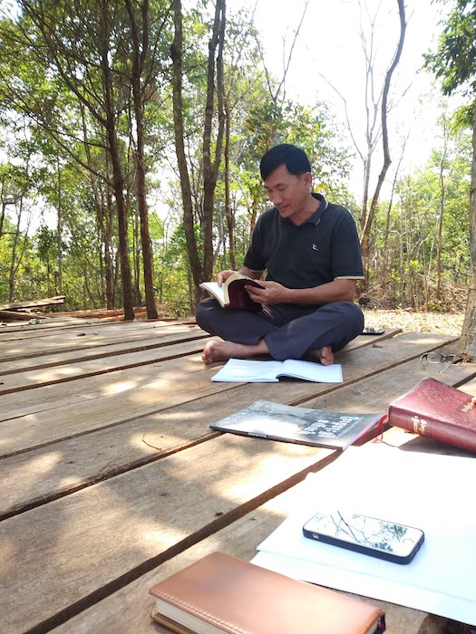 Chhinho teaching pastors and leaders in Mondulkiri at the Shalom Dream CenterA couple months ago, I (Ryan) went on a trip with Chhinho, the Cambodian church leader who started the Shalom network of churches. At the end of last year he passed off a lot of his responsibilities with the Shalom network of churches to a board of Cambodian pastors, and is now focusing on starting a new ministry up near the Vietnamese border, at a place called Mondulkiri, on a property called the Shalom Dream Center. This is where we went for this trip.
Bible Training
On previous trips that Chhinho made up there, he had established contact with a number of pastors and church leaders in Mondulkiri. From these contacts, the selected a few whom he felt like he wanted to focus on, and invited them to take part in trainings to be held roughly once a month. These trainings would use the Fundamentals of the Faith curriculum created by John MacArthur, which has been translated into Khmer by the Action Cambodia translation team. The first of these trainings was in February, and he invited me to join and help teach through one of the lessons.
This was the training we referred to in our last email. To be clear, though I was teaching mostly in Khmer, it was only possible through the help of a translator who helped translate my “Khmer” into more understandable Khmer, as well as helping translate some English words I didn’t know in Khmer as well. In the end, it was more like we co-taught the lesson, which ended up being very effective as we were able to contribute according to each of our gifts.
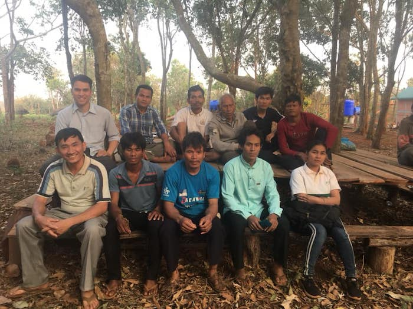 The men that participated in these training sessions Most of the students were not actually ethnically Khmer, but were part of the Phnong Tribe, a minority people group in Mondulkiri. Four of the students drove from 3-4 hours away in order to be present for the two-day training. Though the students who were present all preach regularly, they were all relatively new believers - some saved within the last year - and have very little opportunity for discipleship or training. On top of that their ability to read is limited, due to both the fact that Khmer is not even their native language (though their Khmer is of course still much better than mine) and the fact that there are really no opportunities to get a good education in Mondulkiri in general, especially far away from the city where they live.
In spite of these difficulties, all who were present were eager to learn. It was both humbling and encouraging to see them continuing to review the lesson and work through the questions in the workbook after the teaching ended whenever there was free time, totally unprompted by us. To be honest, a part of me wanted to head to bed early out of tiredness, but seeing their excitement to finally learn more about the Bible compelled me to stay up and help in whatever small way I could!
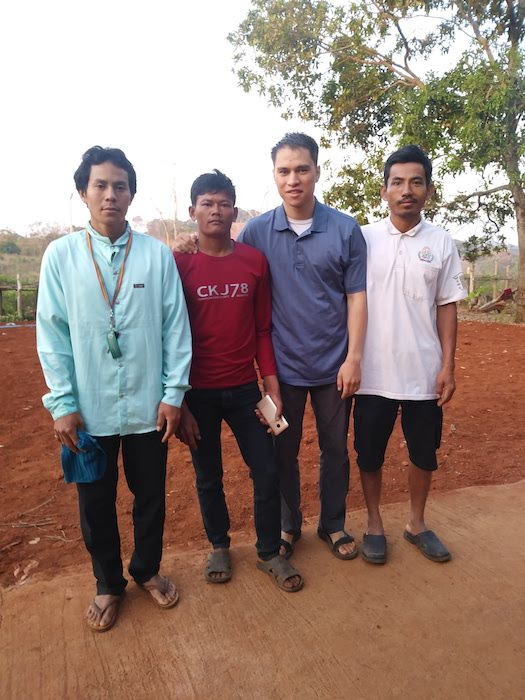 Ryan with Phnong pastors
Visiting a Pastor and a Phnong Village
While we were there, we also got to visit with a pastor who wasn’t able to make it to the training, due to some people trying to steal his land. Our visit with him was very encouraging though. He is also Phnong, and showed me around his village and introduced me to some of his friends and family. He is currently in the process of joining the Shalom Network of Churches, as the first Shalom Church in Mondulkiri.
What’s Next for Us
While I was up there, the main thing that Chhinho and I talked about was what we would do next as far as ministry goes. From his perspective, the most effective thing that our family can do to help the church in Cambodia and in particular to train pastors would be to move up there and help with the ministry he’s trying to start. After seeing it, and talking with him, the other Action missionaries in Cambodia and I agree.
Reasons to Minister in Mondulkiri
The reason why we came to Cambodia in the first place is that we want to go, live, and use our gifts wherever it looks like we can those effectively participate in the great commission, just like every Christian is called to do. With that as our driving motivation, moving how to Mondulkiri makes sense for a number of reasons.
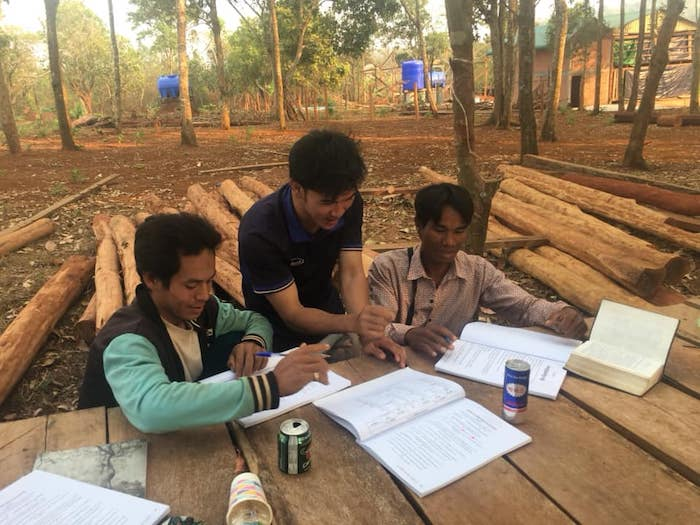 Peter, an intern for Shalom, with some of the pastors We want to train pastors and church leaders and from all appearances, we will be most effective in doing so by being based in Mondulkiri, rather than in Phnom Penh.
There is also the principle that we want to follow direction of local church leaders whenever possible. Mondulkiri is where the local church leadership has singled out as the place where we can most effectively help the Cambodian church, and so that is where we want to be.
And to be sure, the vision that Chhinho has for Mondulkiri fits in exactly with what we would love to see as well. If you want to know more about this vision, we attached his report on the Shalom Dream Center to the email we sent out; if you want a copy of this please let us know and we can send you one. To use his words, the Shalom Dream Center is “part of a strategy to reach all Cambodia with the gospel, including the least reached people groups. Beginning in the provinces east of the Mekong – Mondulkiri, Ratanakiri, Kratie, Stung Treng and Tboung Kmum – it will then reach into the whole of Cambodia and as God leads, into the surrounding nations.”
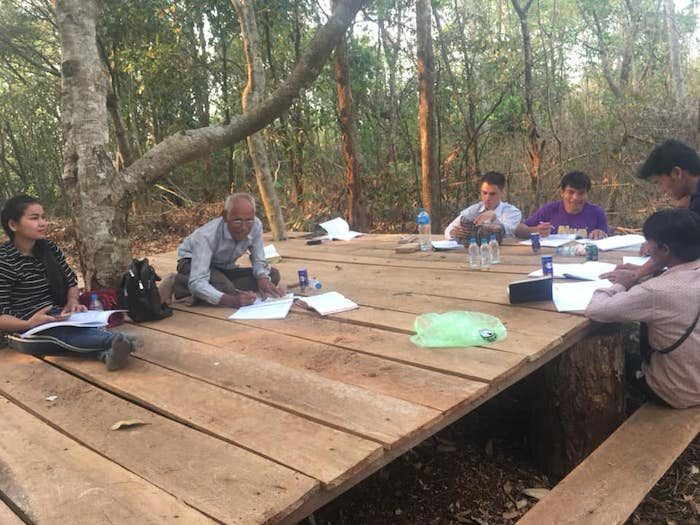 Outdoor lessonMondulkiri itself is largely unreached, with very few missionaries or churches. There have been some missionaries in the past and there are churches there, but as is the case with the Phnong students who came to our trainings, many were saved but then left on their own, with very little training or discipleship. These conditions lend themselves to false teachers coming in and teaching all kinds of false doctrine. We want to come in before too many false teachers get established among these precious churches and help them know the truth and stand on their own.
But Mondulkiri is also strategic due to its location, with several strategic ministry opportunities outside its borders. One of mine and Rebekah’s personal goals is to see Cambodia send out missionaries and reach outside of its own borders to the nations that surround it, and Mondulkiri is staged to be instrumental toward that end. The fact that the Shalom Churches see that as well only encourages our hearts further that this is the place where God would have us to go.
All that to say, in some ways this feels like a change of direction, in some ways this is exactly the opportunity we have been hoping and praying for all along.
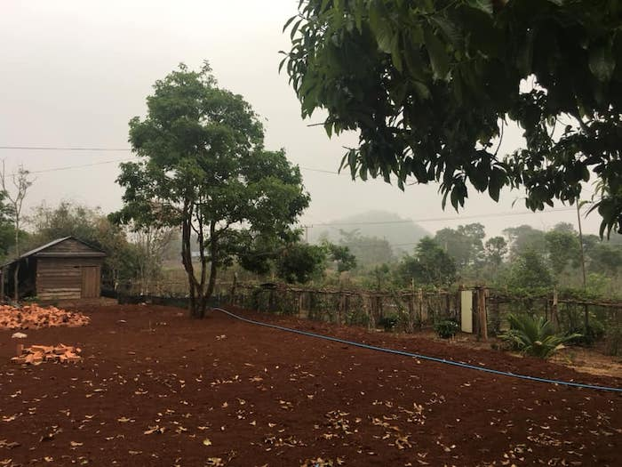 Some of the Shalom Dream Center propertyAs far as language is concerned, in many ways moving would help. It would probably push our language ability far beyond what we could do just living here, since there’s a lot less English speakers or western influence in general. One major help in language learning is finding people with whom the easiest language to communicate in is the language you’re trying to learn, since that is the language you’ll both naturally want to talk in. In Phnom Penh, quite often that language is English; in Mondulkiri that would not be the case nearly as often. However, there would be less opportunity to learn on a more formal level though, so we’d want to focus more on that before going.
However, there are some issues we have to consider/work on before moving:
1) we’d be out there separated from our current friends and connections, and we’re trying to discern if we’re ready for that emotionally/spiritually/in our marriage;
2) what it could look like for me to try to continue to work from up there, since I’m not yet sure about what the internet connectivity is like.
Next Steps
As far as timing goes, after talking with our elders in the states, it seems like May 2020 is a good tentative date for us to shoot for. In the meantime, we plan on continuing formal language learning at the university here in Phnom Penh, visiting Mondulkiri every so often to get a better feel for what life is like up there as well as helping the ministry up there as we have opportunity.
The next trip is actually this Saturday. They are planning on doing the grand opening for the Shalom Dream Center as well as some more training.
Click Here for Chhinho’s Report on the Shalom Dream Center. This pdf also includes several ways you can help the project, including short-term missions opportunities, prayer requests, and specific financial needs to give towards. The pdf includes instructions to give if you are in Cambodia, but if you live outside Cambodia and are interested in giving toward this project, click here and be sure to add instructions to the finance office saying it’s for “Shalom Mission Cambodia/Shalom Dream Center”.
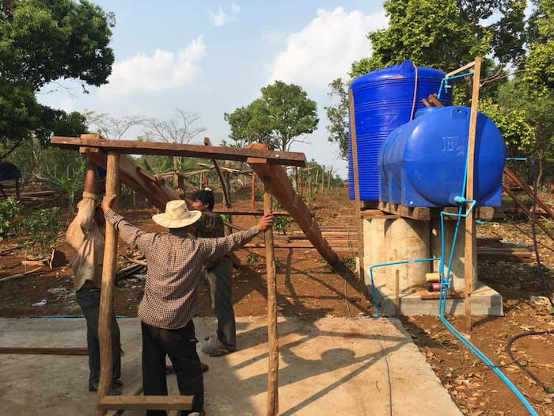 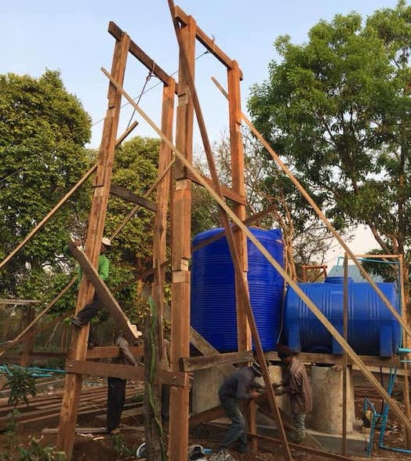 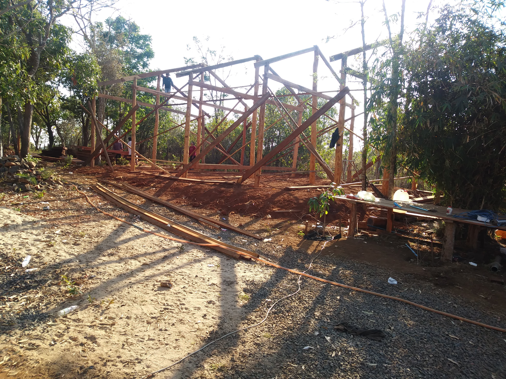
Thanksgiving and Recent Happenings
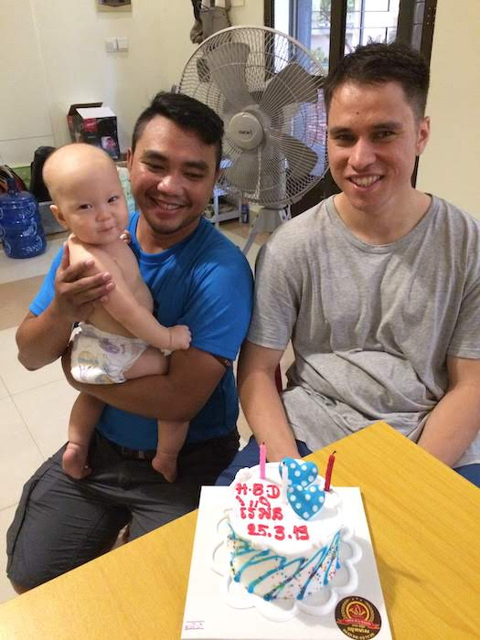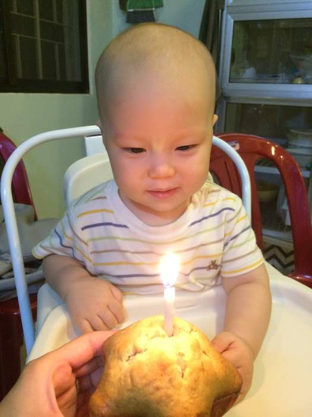 Apart from time spent thinking, talking and praying about Mondulkiri, there are many other things we have been thankful for!
- We celebrated Ryan’s 28th and Jonathan’s 1st birthdays! We are thankful for health this past year and the church body that showers love on Jonathan!
- Rebekah’s mom was able to visit at the end of March for a few days; it was a nice time to spend together sight-seeing a bit, playing with Jonathan and just catching up!
- At our church in Phnom Penh, we have joined some small groups and are able to build relationships more as we progress in language; praise God for these opportunities to connect and encourage each other with Truth!
- It’s hot season now, and with it there have been more power outages and low water pressure. But praise the Lord, He provided a pump to help with water pressure and a generator to help with the power outages.
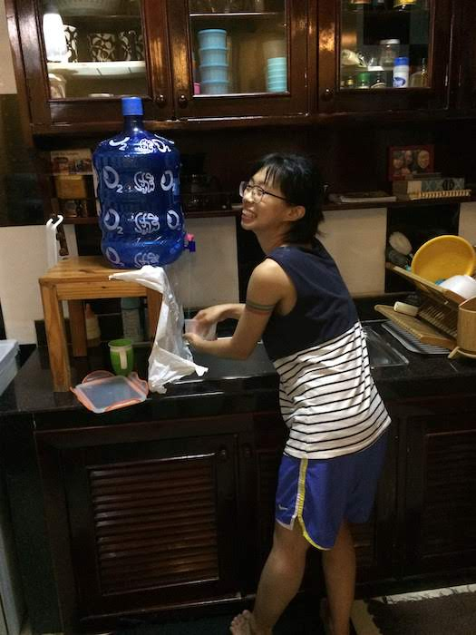 Our system for washing dishes when we didn’t have water!
Prayer Requests
- We’re leaving for Mondulkiri this Saturday. They are having the grand opening for the Shalom Dream Center as well as some more training. Please pray for this event in general, as well as for us specifically as this is the first time for Rebekah and Jonathan to get a chance to visit this place we are looking at moving to.
- Pray for the Dream Center overall and the Shalom network of churches, also known as Shalom Mission Cambodia. Shalom Mission Cambodia has a Facebook page as well if you want to keep up to date!
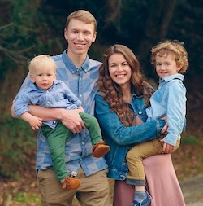 The Van Halterens! - Pray for our marriage to grow stronger. No specific problems, but we always desire to “excel still more” especially in light of the challenges we know will come up if Lord willing we move away from our friends and teammates in a year. With added stressors of the power cuts, heat, water issues, and parenthood, we need more grace and patience for each other.
- It has been confirmed that a new family from Canada, the Van Halterens, will come to join our team in Cambodia this August! Please pray for their preparation and transition.